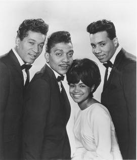

The Monitors
The Monitors were an American vocal group who recorded for Motown Records in the 1960s. The group, which consisted of lead singer Richard Street, Sandra Fagin, John "Maurice" Fagin, and Warren Harris, had two minor hits, "Say You", and then a cover of the Valadiers' "Greetings ", which reached #21 on the Billboard R&B chart, and #100 on the Billboard Pop singles chart.
Complete Discography & Tracklists (15)
2006 The Very Best Of The Monitors 🎵 11 Tracks
2008 The Monitors 🎵 12 Tracks
2009 Three Way Disco 🎵 12 Tracks
2009 Two 🎵 12 Tracks
2010 The Monet Shot 🎵 17 Tracks
2010 The Big Return 🎵 0 Tracks
No tracks registered.